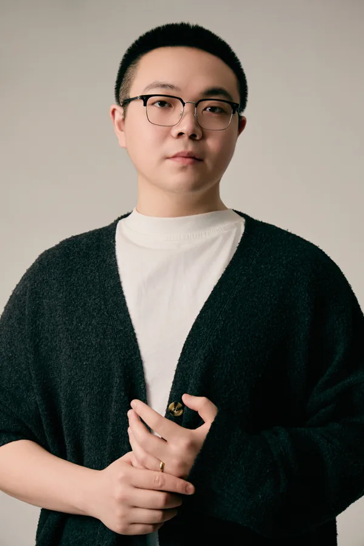
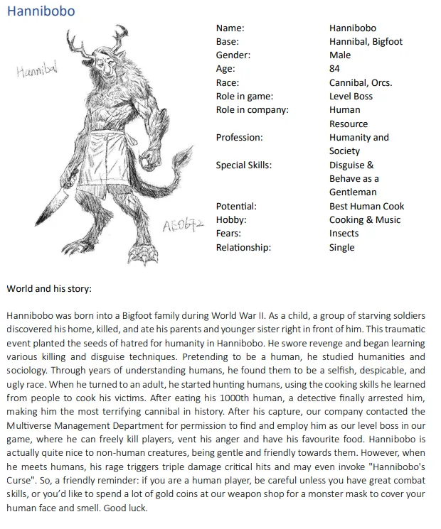
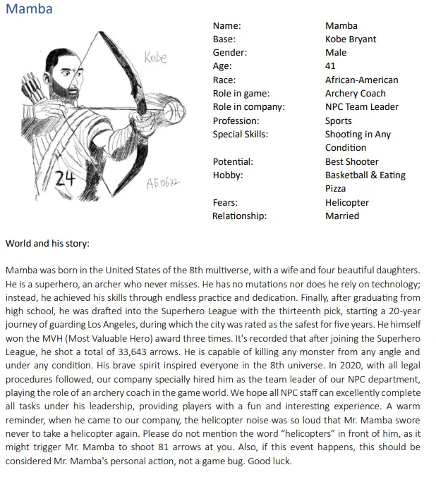
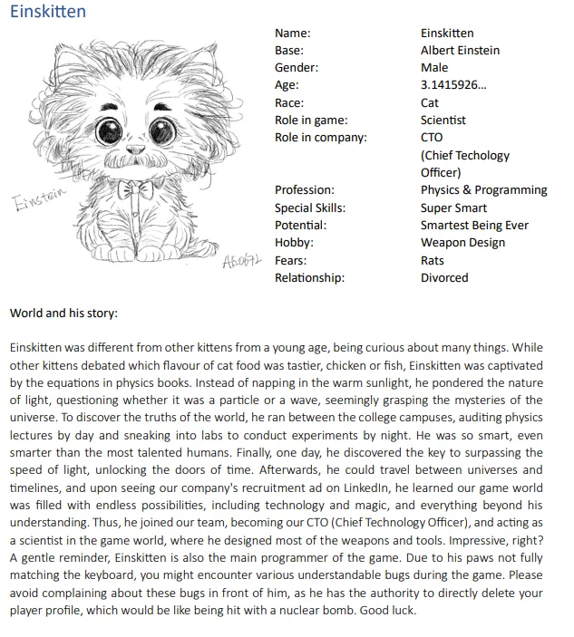

About me
I'm Kevin (Zijing Liu), a Unity developer focused on gameplay systems: mechanics, enemy and NPC AI, state machines and the tools that let a team build levels without waiting on code.
I studied Game Production at JAMK University of Applied Sciences and graduated in 2026 with a weighted GPA of 4.71 out of 5. My bachelor's thesis, a framework linking cognitive functions to game mechanics for gamified therapy, received a 5/5. I'm now in the Game Studies master's programme at the University of Jyväskylä, adding research on player experience and game systems to the engineering side.
From 2024 to 2025 I worked remotely as a Unity developer assistant at Attigas Studio in Canada, prototyping gameplay features in Unity and C#. Before games, I managed a day spa in Melbourne for six years, which is where I learned to run a team and own outcomes.
I speak Mandarin natively, English at C2 and Finnish at A2.
Character and art design
Concept sketches for original characters, each with a short backstory. Drawing helps me talk to artists in their own terms.



Get in touch
I'm looking for Unity developer and gameplay programmer roles. Email or LinkedIn reach me fastest.
- liuzijingliu1601@gmail.com
- Phone
- +358 41 327 2076
- linkedin.com/in/kevin-liu-5631882b5
- GitHub
- github.com/KevinZijingLiu16